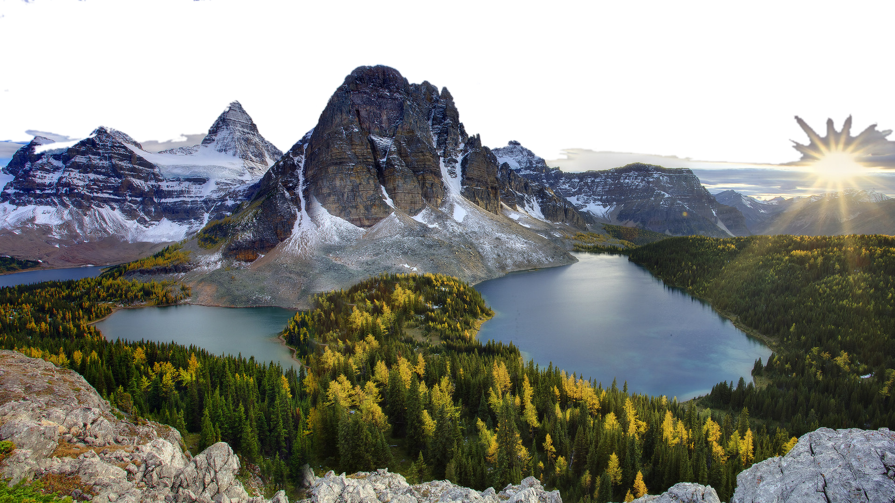
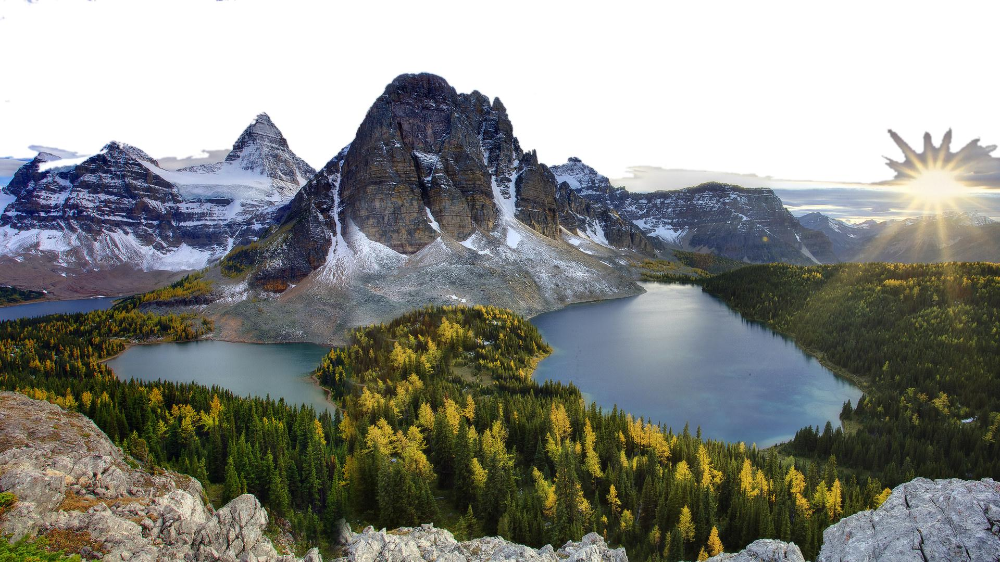
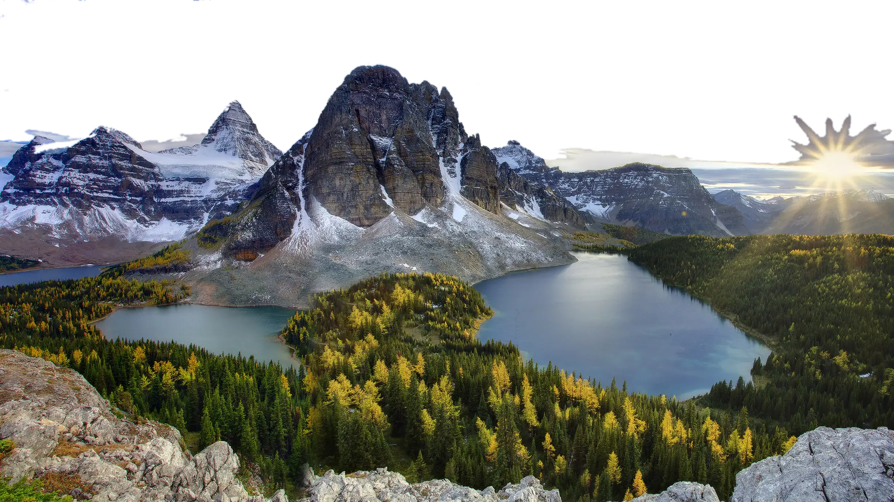

Формат изображений WebP
WebP — (англ. WEB Pictures) формат сжатия изображений как с потерями, так и без потерь, предложенный компанией Google Inc. в 2010 году. Основан на алгоритме сжатия неподвижных изображений (ключевых кадров) из видеокодека VP8. Использует контейнер RIFF.
В отличии от jpg, у webp качество картинки практически не теряется. отличить их формат от высококачественных JPEG практически невозможно. Это видно только по размеру файлов.
Сравнение Webp и PNG
Для сравнения форматов возьмем за основу эту картинку. Она в формате PNG, вес 3.7 MB.

PNG считается самым качественным форматом, тк алгоритм сжатия у него буквально "перерисовываю пиксель в пиксель". Отсюда отсуствие искажений, но при этом и большой вес, что замедляет загрузку страницы.
По словам разрабов гугла Изображения WebP без потерь на 26% меньше по размеру по сравнению с PNG.
Чтобы это проверить, конвертируем PNG в WebP с 100% quality.

Данная картинка в формате WebP и вес 3.12 MB. Как видно, без потерь качества вес действительно уменьшился на 26%, что ускорило загрузку страницы.
Сравнение Webp с JPEG
Отличие PNG от JPG - алгоритм сжатия. Отсюда и потери пикселей, но и значительное уменьшение веса.
Чтобы сравнить WebP c JPEG, сделаем несколько конвертаций. 1я - одинаковый вес, 2я - одинаковое качество.
 JPEG 384 KB
 WebP 384 KB
При одинаковом весе в 384 KB, у JPEG качество 74%, а у WebP - 70%. Теперь приведем к одному качеству
JPEG 70%
Как можно заметить, при одиновковом качестве, JPEG весит 360 KB.
Но у JPEG и WebP есть еще 1 отличие - прозрачность. У WebP она есть, а у JPEG - нет, что можно увидеть на картинках выше - у WebP небо прозрачное, а значит оно цвета страницы, а у JPEG - нет, тк в нем не предусмотрена прозрачность.
Достоинства и недостатки WebP
У WebP есть еще одно преимущество над JPEG и PNG - поддержка анимации. В отличии от GIF, у которого есть такая же функия, у WebP есть возможность построения анимации на основе фотографий и других полноцветных изображений помимо векторных. Так же у WebP значительно меньший размер файла при той же длительности и качестве анимации. Экономия может составлять 70-80%.
К недостаткам формата можно отнести:
- Неполная поддержка браузеров.WebP не поддерживается старыми версиями Chrome, Opera, Safari, Edge. Расширенный список поддерживаемых браузеров можно найти тут
- Не все инструменты для работы с изображениями поддерживают формат WebP. Некоторые программы для редактирования графики могут не поддерживать этот формат без дополнительных плагинов или обновлений.
Вывод
Для чего можно использовать WebP
- Для высокодеталезированных изображений, например снимков. Вес меньше чем png, но качество на уровне
- Для изображений с прозрачностью. Если у изображения большое количевство цветов, при этом присутствует прозрачность, предпочтительнее использовать WebP
- Для анимаций. Более качественные анимации, чем у Gif.